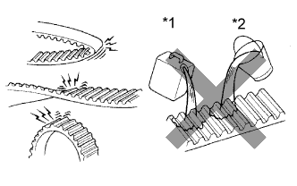
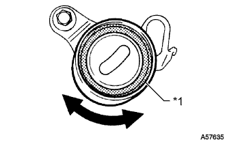
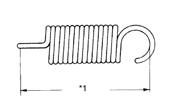

ПРИВОДНОЙ РЕМЕНЬ ГАЗОРАСПРЕДЕЛЕНИЯ > ПРОВЕРКА |
| 1. INSPECT TIMING BELT |
|  |
| *1 | Oil |
| *2 | Water |
If there is premature parting:
If the belt teeth are cracked or damaged, check if either camshaft is locked.
If there is noticeable wear or cracks on the belt face, check if there are nicks on the side of the idler pulley lock and water pump.
If there is wear or damage to only one side of the belt, check the belt guide and the alignment of each pulley.
If there is noticeable wear on the belt teeth:
| 2. INSPECT NO. 1 TIMING BELT IDLER SUB-ASSEMBLY |
|  |
Visually check the seal portion of the No. 1 timing belt idler for oil leakage.
| *1 | Seal |
 | Turn |
Check that the No. 1 timing belt idler turns smoothly. If necessary, replace the No. 1 timing belt idler sub-assembly.
| 3. INSPECT IDLER TENSION SPRING |
|  |
Measure the free length of the tension spring.
| *1 | Free Length |
Measure the tension of the tension spring at the installed length.